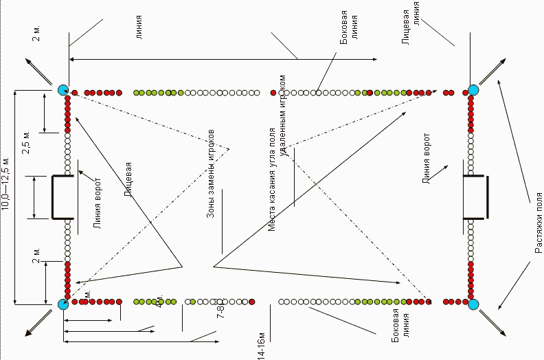
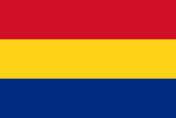
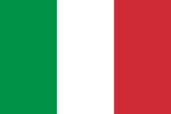
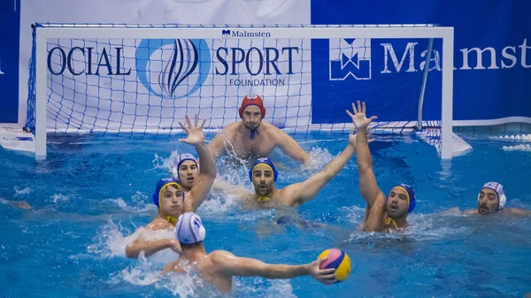

История
Источник
Прародителем водного поло можно считать японскую игру,
суть которой заключалась в передаче мяча специальными шестами игрокам своей команды,
находясь при этом на плаву на соломенных бочках. Современное водное поло было изобретено
Уильямом Уилсоном во второй половине XIX века. Сначала игра очень походила на регби,
так как в первых редакциях правил было разрешено применять силу в борьбе за мяч и
удерживать соперника. Кроме этого поле для игры в водное поло размечалось на
неподвижном водоеме, а вместо ворот в дно водоема были вкопаны палки, выступающие на
30-40 см над поверхностью воды. Игрокам было необходимо вплавь заносить мяч в ворота. В 1869 году водное поло было впервые представлено широкой публике в Лондоне, в то время игра называлась «футбол на воде» и не имела четко сформулированных правил. В 1870 году была созвана комиссия из знатоков спорта для формализации правил, но каких-то результатов комиссия не добилась. Лишь в 1876 году Уильям Уилсон составил правила игры в водное поло, которые оставались актуальными вплоть до 1890 года. С 1900 игра входит в список Олимпийских видов спорта, а первый мировой чемпионат по водному поло был проведён в 1973 году.
Время игры в водном поло. Матч в водном поло состоит из четырех периодов длительностью по 8 минут каждый. Отсчет времени в периоде начинается с первого касания мяча. Каждой команде выделяется всего 25 секунд на атаку, по истечении 25 секунд мяч переходит команде соперника. Правила позволяют каждой команде взять 4 тайм-аута за игру в основное время и 1 тайм-аут в дополнительное. Тайм-аут может взять только команда владеющая мячом. Одновременно на поле могут находиться 6 полевых игроков и 1 вратарь.

Схема поля
Таблица команд сборных
| Место |
Страна |
| 1 |
Венгрия |
| 2 |
 Румыния |
| 3 |
Франция |
| 4 |
 Италия |
| 5 |
 Испания Испания |

Процесс игры